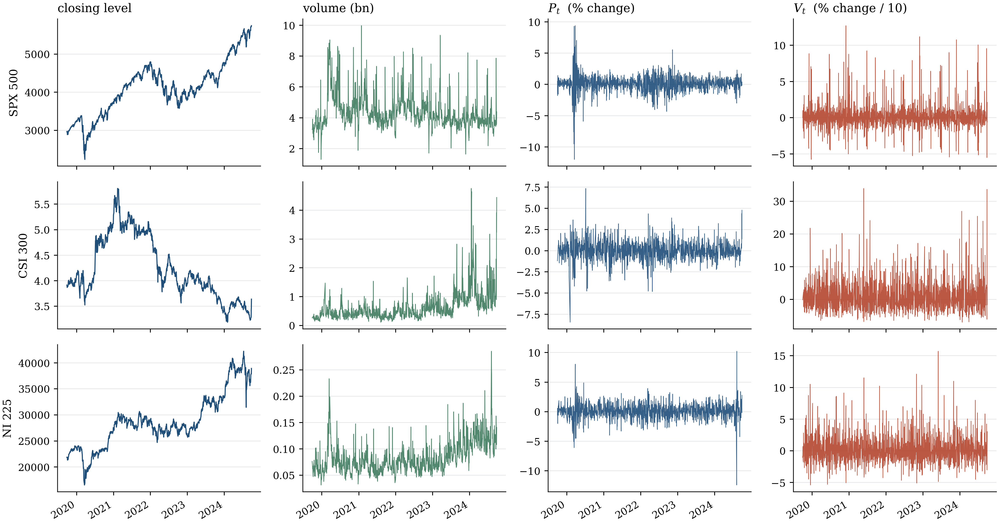
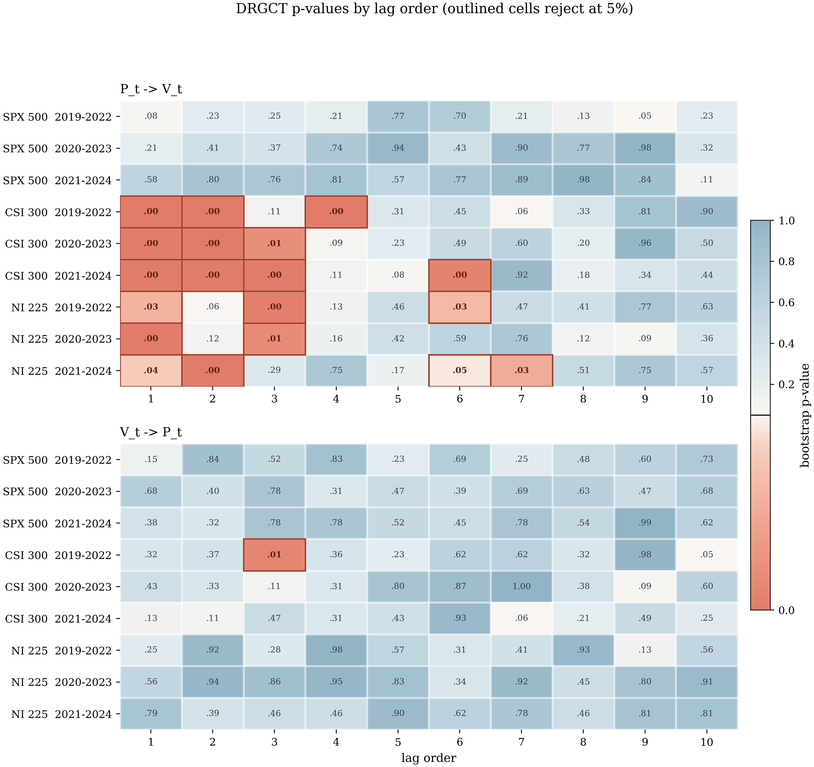

Price and volume in three markets
The application from Section 5 of the paper, reproduced in full: does the daily percentage change in an index level Granger-cause the percentage change in trading volume, and vice versa? Three markets, three overlapping three-year sub-samples, ten lag orders, both directions — 180 tests — plus a rolling-window extension the paper points to but does not carry out.
Produced by
scripts/run_application.py:
python scripts/run_application.py --jobs -1 --rolling --stability-draws 30
1. Why prices and volume
Trading volume rises when prices move sharply and falls when they do not; heavy volume is often followed by large price moves. The relationship is one of the oldest documented regularities in empirical finance (Karpoff, 1987; Gallant, Rossi and Tauchen, 1992; Chen, Hong and Stein, 2001), and it is a natural test bed for a nonlinear causality test: the mechanism is asymmetric, involves thresholds, and operates over several days rather than one.
Following Section 5 of the paper, both series are transformed to percentage changes, and the volume change is divided by ten so the two have a comparable scale:
P(t) = 100 · (Close(t)/Close(t−1) − 1)V(t) = 100 · (Volume(t)/Volume(t−1) − 1) / 10
2. Data
Daily closing levels and volumes over the paper's exact window, 27 September 2019 – 26 September 2024.
| Key | Index | Ticker | Observations |
|---|---|---|---|
spx500 |
S&P 500 | ^GSPC |
1257 — matches the paper's T = 1257 |
csi300 |
CSI 300 (exchange-traded tracker) | 510300.SS |
1211 |
nikkei225 |
Nikkei 225 | ^N225 |
1220 |
The paper does not name its vendor. Closing levels are near identical
across vendors; daily volume is not — and volume dynamics are the whole
exercise here. For the CSI 300, Yahoo truncates the index series
(000300.SS) to roughly the last three years, so the largest
exchange-traded tracker is used instead: genuine exchange turnover, but ETF
turnover rather than index-constituent turnover. Expect the results below to
agree with the paper qualitatively in some blocks and not others; §6 sets out
exactly which.

P(t) and V(t) for the three indices.| Statistic | SPX 500 $P_t$ | SPX 500 $V_t$ | CSI 300 $P_t$ | CSI 300 $V_t$ | NI 225 $P_t$ | NI 225 $V_t$ |
|---|---|---|---|---|---|---|
| Obs. | 1256.000 | 1256.000 | 1210.000 | 1210.000 | 1219.000 | 1219.000 |
| Mean | 0.062 | 0.160 | 0.001 | 0.920 | 0.056 | 0.229 |
| Median | 0.095 | -0.033 | -0.032 | -0.101 | 0.090 | -0.069 |
| Std. dev. | 1.340 | 1.865 | 1.158 | 4.897 | 1.353 | 2.249 |
| Min. | -11.984 | -5.769 | -8.433 | -7.004 | -12.396 | -5.385 |
| Max. | 9.383 | 12.705 | 7.337 | 33.939 | 10.226 | 15.710 |
| Skewness | -0.526 | 1.730 | -0.116 | 1.836 | -0.257 | 1.391 |
| Kurtosis | 16.293 | 11.525 | 8.007 | 9.152 | 13.431 | 7.773 |
| Jarque-Bera | 9304.744 | 4430.385 | 1266.828 | 2587.604 | 5539.850 | 1550.387 |
| JB p-value | 0.000 | 0.000 | 0.000 | 0.000 | 0.000 | 0.000 |
| Ljung-Box(10) | 247.569 | 152.737 | 5.312 | 135.051 | 12.399 | 115.812 |
| LB p-value | 0.000 | 0.000 | 0.869 | 0.000 | 0.259 | 0.000 |
| Ljung-Box$^2$(10) | 1780.124 | 60.641 | 79.513 | 1.479 | 423.691 | 10.567 |
| LB$^2$ p-value | 0.000 | 0.000 | 0.000 | 0.999 | 0.000 | 0.392 |
| ADF p-value | 0.000 | 0.000 | 0.000 | 0.000 | 0.000 | 0.000 |
| KPSS p-value | 0.100 | 0.100 | 0.100 | 0.100 | 0.100 | 0.100 |
3. Results
Hyper-parameters as in the paper: G = 10, L = 20, M = 20, B = 999,
Rademacher multipliers, 5% level.

| Causality direction | Period | SPX 500 | CSI 300 | NI 225 |
|---|---|---|---|---|
| P_t -> V_t | 2019-2022 | ✗ | ✓ | ✓ |
| P_t -> V_t | 2020-2023 | ✗ | ✓ | ✓ |
| P_t -> V_t | 2021-2024 | ✗ | ✓ | ✓ |
| V_t -> P_t | 2019-2022 | ✗ | ✓ | ✗ |
| V_t -> P_t | 2020-2023 | ✗ | ✗ | ✗ |
| V_t -> P_t | 2021-2024 | ✗ | ✗ | ✗ |